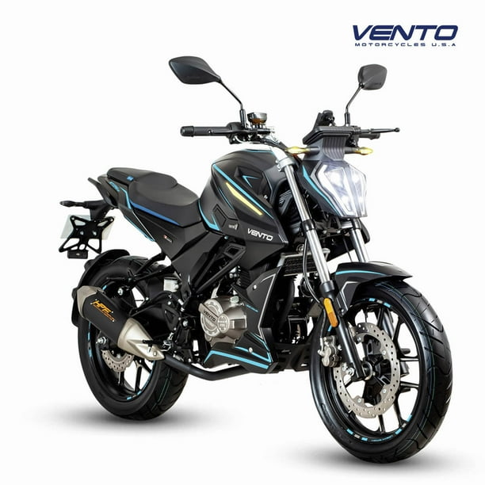

Design and Technology
The Vento Storm 300 stands out for its aggressive and modern design, typical of a naked motorcycle. Its aerodynamic body, diamond-shaped LED headlight, and sporty lines make it look impressive.
It features an easy-to-read digital dashboard, where you can see the speed, revolutions per minute, fuel level, and gear engaged. Plus, its full LED lighting improves visibility..
In terms of technology, this bike includes an inverted front suspension (USD), ideal for better absorbing urban bumps and offering greater control on the road. All of this gives it a more modern appearance..
 ← Back